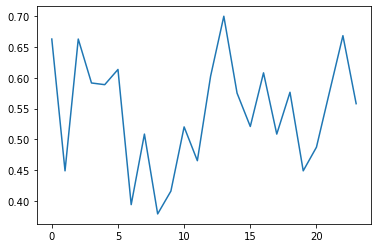

import torch
from IPython.display import clear_output
pt_version = torch.__version__
print(pt_version)1.10.1SEOYEON CHOI
April 6, 2023
METRLADatasetLoader
import torch
from IPython.display import clear_output
pt_version = torch.__version__
print(pt_version)1.10.1import numpy as np
from torch_geometric_temporal.dataset import METRLADatasetLoader
from torch_geometric_temporal.signal import StaticGraphTemporalSignal
loader = METRLADatasetLoader()
dataset = loader.get_dataset(num_timesteps_in=12, num_timesteps_out=12)
#print("Dataset type: ", dataset)
#print("Number of samples / sequences: ", len(set(dataset)))import seaborn as sns
# Visualize traffic over time
sensor_number = 1
hours = 24
sensor_labels = [bucket.y[sensor_number][0].item() for bucket in list(dataset)[:hours]]
sns.lineplot(data=sensor_labels)<AxesSubplot:>
import torch
import torch.nn.functional as F
from torch_geometric_temporal.nn.recurrent import A3TGCN
class TemporalGNN(torch.nn.Module):
def __init__(self, node_features, periods):
super(TemporalGNN, self).__init__()
# Attention Temporal Graph Convolutional Cell
self.tgnn = A3TGCN(in_channels=node_features,
out_channels=32,
periods=periods)
# Equals single-shot prediction
self.linear = torch.nn.Linear(32, periods)
def forward(self, x, edge_index):
"""
x = Node features for T time steps
edge_index = Graph edge indices
"""
h = self.tgnn(x, edge_index)
h = F.relu(h)
h = self.linear(h)
return h
TemporalGNN(node_features=2, periods=12)TemporalGNN(
(tgnn): A3TGCN(
(_base_tgcn): TGCN(
(conv_z): GCNConv(2, 32)
(linear_z): Linear(in_features=64, out_features=32, bias=True)
(conv_r): GCNConv(2, 32)
(linear_r): Linear(in_features=64, out_features=32, bias=True)
(conv_h): GCNConv(2, 32)
(linear_h): Linear(in_features=64, out_features=32, bias=True)
)
)
(linear): Linear(in_features=32, out_features=12, bias=True)
)# GPU support
device = torch.device('cpu') # cuda
subset = 2000
# Create model and optimizers
model = TemporalGNN(node_features=2, periods=12).to(device)
optimizer = torch.optim.Adam(model.parameters(), lr=0.01)
model.train()
print("Running training...")
for epoch in range(10):
loss = 0
step = 0
for snapshot in train_dataset:
snapshot = snapshot.to(device)
# Get model predictions
y_hat = model(snapshot.x, snapshot.edge_index)
# Mean squared error
loss = loss + torch.mean((y_hat-snapshot.y)**2)
step += 1
if step > subset:
break
loss = loss / (step + 1)
loss.backward()
optimizer.step()
optimizer.zero_grad()
print("Epoch {} train MSE: {:.4f}".format(epoch, loss.item()))Running training...
Epoch 0 train MSE: 0.7596
Epoch 1 train MSE: 0.7398
Epoch 2 train MSE: 0.7205
Epoch 3 train MSE: 0.6996
Epoch 4 train MSE: 0.6759
Epoch 5 train MSE: 0.6495
Epoch 6 train MSE: 0.6221
Epoch 7 train MSE: 0.5963
Epoch 8 train MSE: 0.5743
Epoch 9 train MSE: 0.5573model.eval()
loss = 0
step = 0
horizon = 288
# Store for analysis
predictions = []
labels = []
for snapshot in test_dataset:
snapshot = snapshot.to(device)
# Get predictions
y_hat = model(snapshot.x, snapshot.edge_index)
# Mean squared error
loss = loss + torch.mean((y_hat-snapshot.y)**2)
# Store for analysis below
labels.append(snapshot.y)
predictions.append(y_hat)
step += 1
if step > horizon:
break
loss = loss / (step+1)
loss = loss.item()
print("Test MSE: {:.4f}".format(loss))Test MSE: 0.6738